n = 1
while n < 10:
if n % 2 == 0:
print("n is now " + str(n))
n = n + 1n is now 2
n is now 4
n is now 6
n is now 8Computer architecture is a wide branch of computer science that seeks to find answers to questions such as, “What makes up a computer?” and, “How is it that we can use a computer?” The answers to these questions are continuously changing, but we will attempt to give a simple answer in this lesson.
In a previous lesson, we discussed how computer hardware works. Recall that all general-purpose computers, at a minimum, consist of the following hardware components: a central processing unit (CPU), main memory, secondary storage, various input/output (I/O) devices, and a data bus. The data bus is like a highway that the other components use to communicate with each other. Main memory is used to store data and programs that are currently being used. I/O devices allow the outside world to communicate with the computer. The CPU is the device that is responsible for actually executing the instructions that make up a program.
Let’s further discuss the brains of the computer, the CPU. The operation of the CPU is governed by the instruction cycle.
The instruction cycle is a procedure that consists of three phases: instruction fetch, instruction decode, and instruction execution.
The CPU’s task is to perform the instruction cycle over and over until explicitly instructed to halt. The fetch phase of the instruction cycle consists of retrieving an instruction from memory. The decode phase concerns determining what actions the instruction is requesting the CPU to perform. Instruction execution involves performing the operation requested by the instruction.
To fully understand computer architecture, it is important to understand the idea of abstraction as it is used in the field of computer science. Abstraction is an idea of dealing with complex and interconnected systems whereby a user is only interested in the operations of a certain level of complexity and suppresses more complex details. Abstraction is analogous to looking at Google map of a large country, such as the USA. We can see the individual states, large lakes, surrounding oceans, and neighboring countries. At this level of abstraction, one is unable to see the finer details within a state (such as the names of cities, towns, and major roads). However, zooming in provides an increased level of detail. The entire country is no longer visible; instead, perhaps only a single state (e.g., Louisiana) and its neighbors are visible. At this zoomed in level, we can now see some of the cities and major roads. However, we cannot see some of the details of the zoomed out level such as the states that are not immediate neighbors or the oceans. If we zoom in to an even lower level, we can see street names, major buildings, and so on. Again, we lose some of the details at the higher levels. Dividing a complex system (like a map) into levels that progressively abstract away detail allows users of the system to only deal with information that is relevant at a given time.
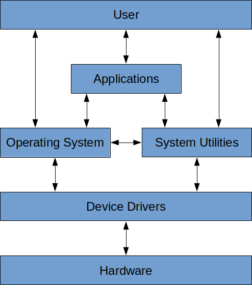
A computer is a very complex system consisting of multiple layers (see Figure 1). At the very top is the user. Users interact with computers in a variety of ways. That is, they can (and do) interact directly with applications (like a spreadsheet application, a game, or a Web browser). Users can also interact directly with the operating system (e.g., through its GUI or via the console) and with system utilities (think of applications that are provided by the operating system). The application layer is the next layer, immediately below the user. It is the layer that a computer user typically interacts with. For example, a user can type and send an email without needing to know how the characters on the screen are made to appear on another computer perhaps one thousand miles away. A user might double-click an audio file on the desktop without needing to know how the computer understands what a double-click is or how to “play” the audio file.
The next layer is the operating system layer. This layer understands user inputs (like typing or double- clicks) and figures out ways of interpreting and executing those inputs. There are many examples of operating systems (e.g., Linux, Windows, MacOS, Unix, Solaris). Of these, Window is still the most common. What is the operating system on your Raspberry Pi? At its core, the operating system is what allows users to interact with the computer and actually make use of it.
System utilities are like applications, but provided directly by the operating system. In one sense, they provide an interface to certain parts of the operating system that allow users to do frequently needed things. For example, the system utility of copying or moving files is often used. Users don’t have to install an application that permits copying and moving files around. This is a system utility provided by the operating system. Since system utilities are essentially embedded in the operating system, this layer sits at the same level as the operating system layer.
The layer beneath the operating system layer is the hardware abstraction layer (or HAL). Sometimes, this layer is referred to as the device driver layer. There are many different types and designs of computers, and this layer makes sure that the computer hardware acts the same regardless of the computer’s design. For example, it makes sure that the “on” button switches on the computer regardless of where it is located. It makes sure that hitting a specific button opens the CD drive. It provides the operating system with clear instructions on how it can interact with the physical hardware of the computer.
The bottom layer is the hardware layer. It represents the physical, tangible stuff that you can see or touch (e.g., keyboard, monitor, mouse, case, power supply, motherboard, etc).
Becoming really good at computer science means having a good understanding of all of the layers, what they do, and how they are used. We will spend most of this lesson dealing with the hardware layer. A lot of devices have two states: a voltage is high or low, a switch is open or closed, a light is on or off. There are many ways of modeling these two-state systems; some are very concrete and some are more abstract. We’ll look at a number of these models, beginning with simple models that are based on mechanical switches and light bulbs.
One of the most basic electrical connection is a light bulb that is either connected to a power source (or not). A slightly more complicated version of this includes a switch that can be either open or closed. These switches are similar to the electrical switches in your home. We will assume that these switches are connected to a source of power that can supply current. The potential of a power source, such as a battery, is called voltage and is measured in units called volts (V). Voltage sources typically have a positive and negative end (called a terminal), and the difference in the potential between both terminals is what we use as the measurement of voltage. Voltage sources can produce either alternating current (AC) or direct current (DC). With DC, one terminal is always positive, and the other is always negative. Examples of DC sources are batteries such as the ones you would put in a small radio, watch, or flashlight. With AC, the two terminals keep on swapping positive and negative roles very quickly (60 times per second!). Examples of AC sources are wall outlets that you would typically find in your home.
The simplest circuit that can be built contains a power supply, a single switch, and a light bulb. If the switch is open, the light is off; if the switch is closed, the light is on. The following figure illustrates both of these cases:
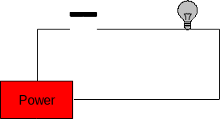
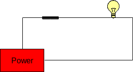
The state of these two circuits can be expressed in table form as follows:
| Switch | Light |
|---|---|
| Open | Off |
| Closed | On |
We can increase the complexity of this circuit somewhat by adding a second switch between the first switch and the light bulb. This results in four possible configurations:
This is illustrated in the figure below.
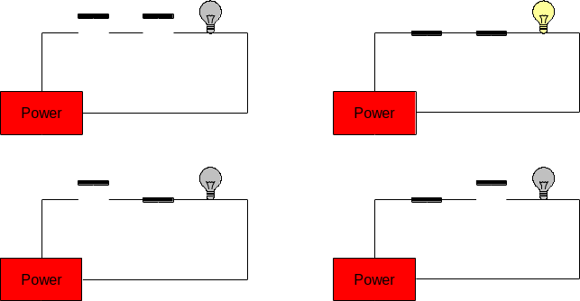
These circuits are called series circuits since the two switches occur on the same path from the power source back to itself. In series circuits, when either one or both of the switches are open power will not flow, and the light bulb will be off. Only when both switches are closed does power flow, and the light bulb illuminates. Said another way: if both switch A and switch B are closed, then the light will turn on.
The relationship between the states of the two switches (open or closed) and the state of the light bulb (on or off) is summarized in the following table:
| Switch A | Switch B | Light |
|---|---|---|
| Open | Open | Off |
| Open | Closed | Off |
| Closed | Open | Off |
| Closed | Closed | On |
Another type of circuit can be designed using two switches. This second type of circuit arranges the switches in parallel rather than in series. In a two-switch parallel circuit, each of the switches is placed on a separate path between the power source and the light bulb. The figure below illustrates the four possible configurations of a two-switch parallel circuit. As was the case with the series circuits, there are four possible configurations of the circuit (in fact, they are exactly the same as before). When both switches are open power does not flow and the light bulb is off. However, whenever either or both of the switches are closed, power flows and the light will turn on. Said another way, if switch A or switch B is closed, then the light will turn on.
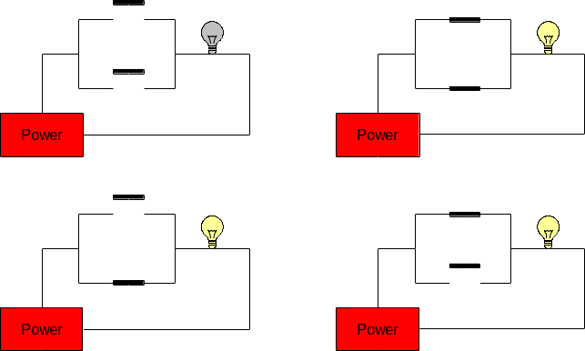
The relationship between the states of the two switches (open or closed) and the state of the light bulb (on or off) is summarized in the following table:
| Switch A | Switch B | Light |
|---|---|---|
| Open | Open | Off |
| Open | Closed | On |
| Closed | Open | On |
| Closed | Closed | On |
More complex circuits with three or more switches are possible!
The next Raspberry Pi activity will involve implementing various circuits that illustrate some of the ones covered above. Initially, the Raspberry Pi will only be used as a power source. We will be connecting it to a circuit prototyping board called a breadboard, and the Raspberry Pi will provide power to the breadboard. A breadboard is used to simplify the process of prototyping connections between electronic components. It allows the making of secure connections between simple electronic devices by simply plugging them into appropriate rows or columns of the board. Here’s an example of a breadboard:
Breadboards actually derive their name from a breadboard (i.e., a wooden board on which bread is often cut). This is because early versions of breadboards were made from the wooden bread cutting workstations.
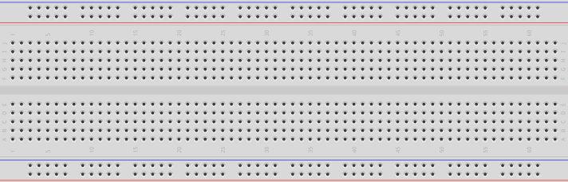
The holes in the breadboard allow electronic components (including wires) to be connected to each other. Note that there are internal connections within the breadboard. Each row along the top and bottom of the breadboard is connected. In addition, each column in the center portion is connected; however, there is a disconnect across the center gap:
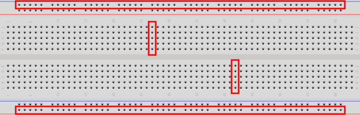
The first part of the Raspberry Pi activity will simply be to connect a power supply to a light. Since the Raspberry Pi provides DC, the light we will use is called an LED. We’ll explain this later; but for now, here’s an example of the connected electronic components for this part of the activity:
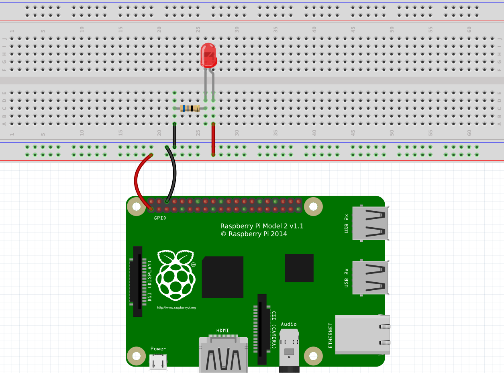
The image above is an example of the topological layout of a circuit. That is, it does a pretty good job of showing how the circuit looks physically when connected. Of course, there are many more ways to layout this exact circuit, and this is just one way. This method of diagramming a circuit is called a layout diagram because it shows the physical layout of the electronic (and other) components.
A circuit diagram (also known as a schematic) is another way of representing a circuit that only shows the connections and substitutes actual electronic components with standard symbols.
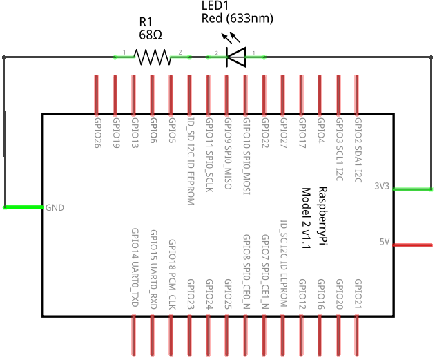
Figure 2 is an example of a circuit diagram.
A circuit diagram is a useful way to represent a circuit. Note how it can topologically be laid out in a number of ways. Various electronic components have unique symbols. For example (in the circuit diagram above), the LED has the following symbol:
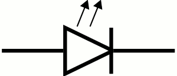
The resistor has the following symbol:

The large rectangular object with lines coming out of it is the Raspberry Pi. Technically, this represents the GPIO pins on the Raspberry Pi. We’ll discuss this more later. We will also show more electronic components and their symbols later.
Let’s go through the components, one-by-one. At the bottom is the Raspberry Pi. You will notice that there are two wires connecting some pins on the RPi to the breadboard. We typically use red wires to signify positive voltage and black wires to signify negative voltage. In DC, the negative side is called ground. So red wires connect positive power to something, and black wires connect something to ground.
The red “light” in the circuit is called an LED (Light Emitting Diode). An LED is more convenient than a traditional light bulb, because it does not require high voltage in order to turn it on. In fact, it consumes such a small voltage that typical higher voltage levels would render the LED unusable. Be careful when using LEDs, and never connect them directly to a voltage source.
An LED allows current to flow through it in only one direction (from positive to negative). LEDs have a short leg and a long leg. The short leg is called the cathode and is the negative side. The long leg is called the anode and is the positive side. The head of an LED is also flat on one side: the negative (or cathode) side. LEDs come in various colors (the one in the circuit above is red, for example). The longer leg of an LED should always be connected to the positive side of your voltage source. If it is connected backwards (i.e., with the shorter leg connected to the positive side), the LED will not light and may even burn out. For this reason, an LED should always be connected to a DC voltage source.
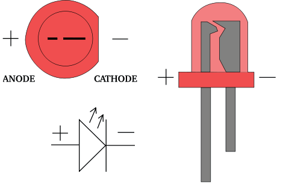
Since most power sources are too strong for typical LEDs, we must reduce the current somewhat so that the LED does not become damaged. Resistors are typically used to resist the flow of electricity. When using them with LEDs, we typically connect a resistor in series with the LED. It doesn’t matter if the resistor is on the positive or negative side of the LED. It works the same in either case. Resistors come in various resistances. Resistance is measured in a unit called the ohm (Ω). Here is an example of a 220Ω resistor:
Resistors have different values, and the value of a resistor can be determined by looking at the colored bands that surround its body. Because resistors are typically small in size (any letters written on one would be too small to be easily read), engineers invented a color code that can be used to calculate the resistance of a resistor. There are multiple online resources that can teach you how to read the value of a resistor from its colors.
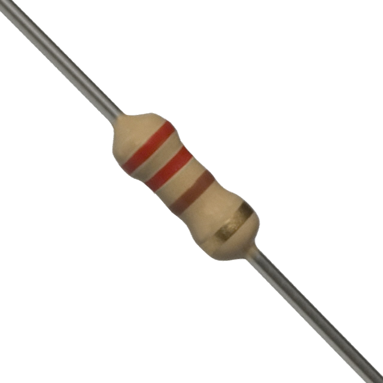
We can calculate the resistance required to resist the flow of electricity through the LED using Ohm’s Law. Ohm’s Law establishes a relationship between voltage, current, and resistance. Let’s first fully define each of these:
Voltage is the difference in electric potential energy between two points. It can be considered as electric pressure and/or the work required to move electric charge between two points. The unit used to represent voltage is the volt (V).
Current is the flow of electric charge (or electrons moving through a wire). The unit used to represent current is the ampere (A), or amps. We typically used the symbol I to represent current in a mathematical formula (such as Ohm’s Law).
Resistance is the measure of difficulty to pass an electric current through a conductor. A conductor is some material that allows the flow of electric current. The unit used to represent resistance is the ohm (Ω). We typically used the symbol R to represent resistance in a mathematical formula (such as Ohm’s Law).
Ohm’s Law is defined as the following: \[ V = IR \]
Stated formally, the voltage (electric potential difference) across two points on a circuit is equivalent to the product of the current between those two points and the total resistance of all electrical devices present between those two points.
Consider the LED circuit above, where the red LED requires a forward voltage of 2V (i.e., the amount of voltage required across the LED to light it) and has a forward current of 20mA (i.e., the amount of current flow required through the LED to sufficiently power it on). These values are provided in the data sheet of the LED. A data sheet is a document that provides technical information about an electrical component.
We can calculate the resistance required in the circuit to ensure that the LED lights up properly and is not possibly damaged by having too much current move through it or too much voltage across it. Suppose that our power source (the Raspberry Pi) provides 3.3V. The voltage difference across the source voltage and ground is 3.3V (since ground is at 0V). According to the data sheet, the LED requires 2V across its legs and requires 20mA of current through it. Using Ohm’s Law we can solve for R. The value for V is 1.3V (3.3V at the source – 2V through the LED), and the value for I is 0.02A (20mA required through the LED). And now we solve: \[ \begin{split} V &= I * R \\ (3.3V - 2V) &= 0.02A * R \\ 1.3V &= 0.02A * R \\ 65 &= R \end{split} \]
So the resistance should be 65Ω. The closest valued resistor available is 68Ω. We can therefore use a 68Ω resistor in series with the LED. This should be sufficient to turn it on brightly without damaging it.
You may have noticed that resistors also have a wattage rating. To explain this, we must first discuss electric power. Electric power is the rate at which electric energy is transferred by a circuit. The unit used to represent power is the watt (W). Each component in a circuit dissipates power (as heat – usually through friction – as electrons move through the component). Therefore, each component has a power rating that provides a measure of how much power it can dissipate without breaking down. We can calculate the power dissipated in a circuit using a variant of Ohm’s Law:
\[ P=VI \]
The power in a circuit is defined as the product of the voltage across two points on a circuit and the current between those two points. In the LED example above, the total power dissipated in the circuit is calculated as follows:
\[ \begin{split} P &= V * I\\ P &= 3.3V * 0.02 A\\ P &= 0.066W \end{split} \]
To calculate the power dissipated by each component, we simply need to isolate the voltage drop across each. The current is constant in the entire circuit. So for the LED, we can calculate the power dissipated as follows:
\[ \begin{split} P &= V * I\\ P &= 2V * 0.02 A\\ P &= 0.04 W \end{split} \]
So we would need an LED rated at 0.04W. And for the resistor:
\[ \begin{split} P &= V * I\\ P &= ( 3.3V −2V ) * 0.02 A\\ P &= 1.3V * 0.02 A\\ P &= 0.026W \end{split} \]
So we would need a resistor rated at 0.026W.
In the end, we usually opt for a power rating that is greater than the actual power dissipated by the component (so that it can last a long time). A good target is not to exceed 60% of the wattage rating of the component. For the resistor, this means a power rating of 0.043W (\(0.026W / 0.6\)). Most typical resistors are rated at 0.25W (some are 0.125W and others are much higher). For the LED, this means a power rating of 0.067W (\(0.04W / 0.6\)), or 67mW. Most typical LEDs are rated at approximately 120mW. For this circuit, a typical LED rated at 120mW and a resistor rated at 1/8W would work just fine.
Gates are electronic versions of the mechanical switches introduced earlier. Some gates have multiple inputs, but all gates have a single output. Just as the switches and light bulbs of the previous examples were always in either of two states, the inputs and outputs of gates are confined to two voltage states. The voltage of every input to the gate, as well as the output from the gate, must be either high (positive voltage) or low (0V, or ground). We use the symbol “1” to represent the high voltage state and “0” to represent the low voltage state.
There are three basic kinds of logic gates: and gates, or gates, and not gates. An and gate has two inputs and one output. The output is “1” (high) only when both inputs are “1” (high). In all other cases the output of and is “0” (low). Here is the symbol for an and gate (where the two inputs are on the left, and the output is on the right):
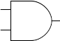
We can represent the possible states of a gate in a truth table.
A truth table defines the meaning of a gate, or circuit, by listing every possible configuration of inputs along with the corresponding output.
Traditionally, inputs are listed on the left side of the table with the output on the right. Each row of the truth table represents one configuration that the circuit can be in. Truth tables for circuits with n inputs will always have exactly 2n rows, one for each possible configuration of the inputs. The following is the truth table for the and gate, where the inputs have been labeled A and B, and the output has been labeled Z:
| A | B | Z |
|---|---|---|
| 0 | 0 | 0 |
| 0 | 1 | 0 |
| 1 | 0 | 0 |
| 1 | 1 | 1 |
Since the and gate has two inputs, its truth table will contain 22 = 4 rows. The first row of the truth table represents the situation in which both inputs to the and gate are low. In this case the output will be low as well. The second and third rows cover the cases in which one of the inputs is high and the other is low. In line two, the first input is low and the second is high; whereas in line three, the first input is high and the second is low. In either case, the output is low. The final row of the table represents the situation in which both inputs are high. In this case, the output will be high as well.
The functionality of the and gate can be implemented by the series circuit introduced earlier:
If the switches represent the inputs, A and B, then this circuit correctly produces the output, Z, of an and gate (which is the light bulb in the circuit). In fact, compare the truth table for the and gate above with the truth table for the circuit:
Table 1: AND gate vs 2 switches in series
| Switch A | Switch B | Light |
|---|---|---|
| Open | Open | Off |
| Open | Closed | Off |
| Closed | Open | Off |
| Closed | Closed | On |
| A | B | Z |
|---|---|---|
| 0 | 0 | 0 |
| 0 | 1 | 0 |
| 1 | 0 | 0 |
| 1 | 1 | 1 |
If Open is replaced with 0 and Closed with 1, the tables are the same. The reason that truth tables are called as such is that if 1 is taken to mean true and 0 is taken to mean false, then the output of the table defines the circumstances under which the specified logical operation is true. For example, in common English usage, A and B will be true only when both A and B are true. The statement: “My cat is old and fat” is only true when the cat in question is both “old” and “fat.” If my pet cat were either young, or skinny, or both, then the statement would be false.
The thing that is so exceedingly cool about logic gates, and the circuits that implement them, is that very simple devices can capture small parts of what humans consider logical reasoning. As you can well imagine, this idea caused great excitement when first discovered.
The or gate is similar to an and gate, in that it has two inputs and one output. The output of the or gate is 1 whenever either (or both) of the inputs are 1. The only case in which the output is 0 is when both of the inputs are 0. Here is the symbol and truth table for the or gate:
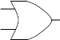
| A | B | Z |
|---|---|---|
| 0 | 0 | 0 |
| 0 | 1 | 1 |
| 1 | 0 | 1 |
| 1 | 1 | 1 |
Again, the two inputs of the or gate are labeled A and B, and its output is labeled Z. Notice that the or gate can be implemented by the parallel circuit introduced earlier:
Table 2: OR gate vs 2 switches in parallel
| Switch A | Switch B | Light |
|---|---|---|
| Open | Open | Off |
| Open | Closed | On |
| Closed | Open | On |
| Closed | Closed | On |
| A | B | Z |
|---|---|---|
| 0 | 0 | 0 |
| 0 | 1 | 1 |
| 1 | 0 | 1 |
| 1 | 1 | 1 |
You should convince yourself that the behavior of the or gate captures the semantics of the word “or” as it is commonly used. The statement: “My cat is either on the couch or under the bed” is true if either the phrase “My cat is on the couch” is true or the phrase “my cat is under the bed” is true. The original statement is false only when neither of these phrases is true.
The kinds of languages that are widely used today are known as programming languages. Programming languages allow us to represent algorithms in a way that is similar to English but is more structured and much less ambiguous.
A programming language is a precisely constructed language that is specifically used to communicate instructions to a computer.
English is a spoken language. As such, it was spoken first, rules were later defined and written down. Therefore, there are many exceptions (i.e., words and phrases that are grammatically correct but don’t conform to the general grammar/spelling rules). Spoken languages are sometimes ambiguous and open to interpretation. This means that a single statement can have multiple meanings. For example, the statement “I made the robot fast” can mean several different things. Does it mean that the robot was built quickly? Or does it mean that the robot was modified so that it would move around more quickly than it did before? Perhaps it means that the robot is named Fast. Or maybe that we managed to make the robot stop eating nuts and bolts.
Humans rely on external factors like context and body language to understand the true meaning of a statement in a spoken language. And even then mistakes in interpretation still happen. With computers however, we need a language that is so structured and unambiguous that every computer can understand and interpret a given statement in the exact same way. For example, we don’t want two different computers giving us two completely different answers to the arithmetic expression \(1 + 1\). In contrast to spoken languages, programming languages are first defined with rules. The language itself is then derived from those rules. Programming languages are therefore quite structured and not ambiguous. They are very precise and logical.
There are many different programming languages that can be used to describe an algorithm. One of them, for example, is called Python, and it is what we will be using for the majority of the Living with Cyber curriculum. It is the duty of the programmer to write down the tasks that he/she wants done in a given programming language. Since computers can only understand machine language, we utilize an application known as a compiler that translates this programming language into machine language.
A compiler is a tool used to translate an algorithm expressed in a programming language to machine language. The process by which this conversion from programming language to machine language is done is called compilation.
The compilation process takes an algorithm written in a programming language and translates it to assembly language. From there, a process known as linking converts the assembly language to machine language. This is illustrated by Figure 3 below:
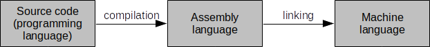
Once machine language is generated to match a program, the computer can then directly execute the program and implement the algorithm. A fully compiled language is only executable by a CPU with the same characteristics and operating system (often, including version) as that which it was compiled for. A programmer who wants wide distribution of his software will need to compile source code to the various destination computing architectures and operating systems that are the most likely to be used by the target audience for the application. Of course, the programmer could simply distribute source code and let users compile that themselves. Often, however, programmers do not wish to distribute source code for a variety of reasons (e.g., intellectual property). Figure 4 below shows how a program would need to be compiled numerous times to cover a range of target computing architectures and operating systems:
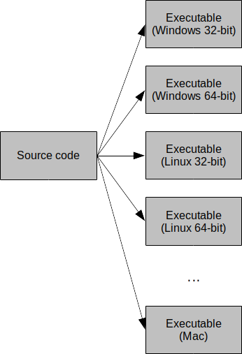
Not all programming languages are compiled to machine language. Some are never compiled and are executed, one instruction at a time, by an interpreter.
An interpreter is a tool used to evaluate instructions, written in a programming language, as the program is executed.
An interpreter can be thought of as a real time compiler that executes high level programming language instructions, one at a time. Interpreted languages are much slower to execute than compiled languages. Examples of interpreted languages are Python, PHP, JavaScript, and Perl. To execute a program written in an interpreted language, you must have an appropriate interpreter installed on your computing system. Interpreted languages also require programmers to distribute their source code, and users to have an appropriate interpreter installed on their system. Maintaining code privacy is therefore not possible with interpreted languages.
Partially compiled and interpreted languages combine the convenience of interpreted languages (i.e., not having to compile source code to a large number of target machine language executables) and the privacy and speed of compiled languages (i.e., not having to distribute source code).
A hybrid language is a programming language that is compiled down to an intermediate language, and then interpreted (while the program is executed) from there.
Examples of partially compiled languages are Java, Python, and Lisp. Note that Python can be strictly interpreted or partially compiled depending on the programmer’s preferences. The intermediate language is distributed and subsequently executed on any computing platform that has an interpreter for the intermediate language. For example, Java source code is typically expressed in a .java file and partially compiled to Java bytecodes (in a .class file) that can then be distributed. A Java Virtual Machine (JVM) executes the bytecodes by interpreting each instruction, one at a time. The benefit of this method is that a programmer can distribute a single file to everyone, regardless of CPU architecture and operating system. Anyone wanting to execute the file simply needs to have a version of the JVM for their computing system. This is illustrated in Figure 5 below:
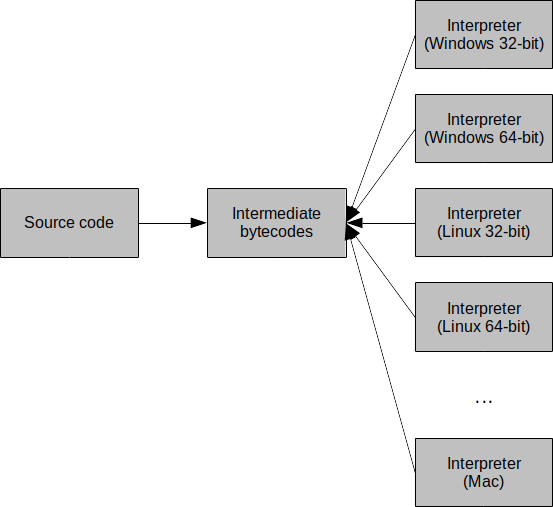
Over the past forty years or so, three general classes, or paradigms, of programming languages have emerged. These paradigms include the imperative paradigm, the functional paradigm, and the logical paradigm. In addition, during the past decade or so these paradigms have been extended to include object-oriented features. A language is classified as belonging to a particular paradigm based on the programming features it supports.
Object-oriented imperative languages are, by far, the most popular type of programming language. Both Java and C++ (two of the most used programming languages in industry) are object-oriented imperative languages. Scratch and Python are imperative languages – although Python does contains object- oriented attributes, Scratch does not.
The imperative paradigm is based on the idea that a program is a sequence of commands or instructions (usually called statements) that the computer is to follow to complete a task. The imperative style of programming is the oldest, and now with object-oriented extensions, continues to be far and away the most popular style of programming.
The Living with Cyber curriculum first (and very briefly) utilizes Scratch as the programming language. This is quickly followed by Python. Scratch is not intended to be used to create applications designed for production systems. That is, it is not a general purpose programming language. Instead, it is a teaching tool aimed at simplifying the process of learning to program. Scratch purposefully omits many features available in other popular programming languages in order to keep the language from becoming overly complex. This allows you to focus on the big picture rather than get bogged down in the complexities inherent in real programming languages and their development environments.
One way of thinking about writing Scratch programs is to compare it to programming in a production programming language with training wheels on. Complex and useful programs can be written in Scratch; however, there are many things that programmers are allowed to do in production languages that are not possible (at least not straightforward) in Scratch. For example, Scratch does not support functions and function calls directly, nor does it support recursion directly. These terms may not be familiar right now; however, these restrictions are designed to help beginning programmers avoid making common mistakes.
General purpose programming languages are more robust, and can (and are) used in more situations than educational programming languages like Scratch. Think of it like this: using a programming language like Scratch is like building a Lego house only using 2x4 Lego pieces. While it is possible to do so, there is a limitation on what kinds of houses you can build. Conversely, using more general purpose programming languages is like building a house with any kind of Lego piece you can think up in your mind. There are fewer limitations, and the kinds of houses that you can build are limitless. From this point, we will use Python as the general purpose programming language in the course.
You may have heard about other general purpose programming languages: Java, C, C++, C#, Visual Basic, and so on. So why use Python instead of, say, Java? In the end, it amounts to the simple idea that, unlike all of the other general purpose programming languages listed above, Python allows us to create powerful programs with limited knowledge about syntax, therefore allowing us to focus on problem solving instead. In a sense, Python is logical. That is, nothing must be initially taken on faith (that will ostensibly be explained at a later time). There isn’t any excess baggage that’s required in order to begin to write even simple Python programs.
Recall how, in geometry, the formula for calculating the volume of a cone was given. At that time, it was simply inexplicable. That is, you were most likely told to memorize it. It is not until a calculus course that this formula is actually derived, and how it came to be is fully explained. Why? Well, it is simply because it requires calculus in order to do so. Most students taking a geometry course have not yet had calculus; however, formulas for calculating the volume of various objects (including a cone) are typical in such a course. The problem, of course, is that we are told to take it on faith that it, in fact, works as described. We are told that, how it works and how it was derived, will be explained at a later time. The problem with this is that it forces memorization of important material as opposed to a deep understanding of it (which, in the end, is the goal).
A similar thing actually occurs in a lot of programming languages. Often, we must memorize syntax that will be explained later. Python is unique in that it does a pretty good job of taking all of that out by just being simple. Programming in Python is immediately logical and explicable.
Take the following simple example of a program that displays the text, “Programming rules, man!” in various general purpose programming languages:
// Basic text display program in Java.
public class SimpleProgram
{
public static void main(String[] args)
{
System.out.println("Programming rules, man!");
}
}// Basic text display program in C
#include <stdio.h>
int main()
{
printf("Programming rules, man!\n");
}// Basic text display program in C++
#include <iostream>
using namespace std;
int main()
{
cout << "Programming rules, man!" << endl;
}//Basic text display program in C#
public class SimpleProgram
{
public static void Main()
{
System.Console.WriteLine("Programming rules, man!");
}
}'Basic text display program in Visual Basic
Module Hello
Sub Main()
MsgBox("Programming rules, man!")
End Sub
End ModuleAnd in Python
print("Programming rules, man!")In all of these examples, compiling and running the programs (or interpreting them) produces a single line of output text: “Programming rules, man!” Did you notice that, in all of the examples (except for Python), there seems to be a good bit of seemingly extra stuff for such a simple program? There are a lot of words that you may not be familiar with or immediately understand: class, public, static, void, main/Main, #include, printf, cout, namespace, String[], endl, Module, Sub, MsgBox, and so on. In fact, the only readable version to a beginner is usually the one written in Python. It is pretty evident that the statement print(“Programming rules, man!”) means to display that string of characters to the screen (or console).
Python is extremely readable because it has very simple and consistent syntax. This makes it perfect for beginner programmers. It also forces good coding practices and style, something that is very important for beginners (especially when it comes to debugging and/or maintaining programs). Python has a large set of libraries that provide powerful functionality to do just about anything. Libraries allow Python programmers to use all kinds of things that others have created (i.e., we don’t have to reinvent the wheel). A huge benefit of Python is that it is platform independent. It doesn’t matter what operating system you use, it is supported with minimal setup and configuration, and there is no need to deal with dependencies (i.e., other things that are required in order to just begin to code in Python).
Don’t think that, because of its simplicity, Python is therefore not a powerful language (or perhaps that it doesn’t compete with Java or C++). Python is indeed powerful, and can do everything that other programming languages can do (e.g., it does support the object-oriented paradigm). It is based on a few profound ideas (collectively known as The Zen of Python written by Tim Peters)
The name of the Python programming language is taken from a television series called Monty Python’s Flying Circus (and not from the snake).
Many programmers write their programs in a general purpose programming language using nothing but a text-based editor (usually a simplistic one, albeit with useful characteristics such as syntax highlighting). In fact, some write programs at the command line (in the terminal) using nothing but a text-based text editor (i.e., without graphical characteristics). Most programmers, however, use an IDE (Integrated Development Environment).
An Integrated Development Environment (IDE) is a piece of software that allows computer programmers to design, execute, and debug computer programs in an integrated and flexible manner.
On the Raspberry Pi, the IDE used to design Python programs is called IDLE (which stands for Python’s Integrated DeveLopment Environment). Other IDEs exist for pretty much all of the most used general purpose programming languages: Eclipse, Visual Studio, Code::Blocks, NetBeans, Dev-C++, Xcode, and so on. In fact, many of these IDEs support more than one language (some natively, others by installing additional plug-ins or modules)! Here’s an image of IDLE with the program shown earlier implemented (and executed):
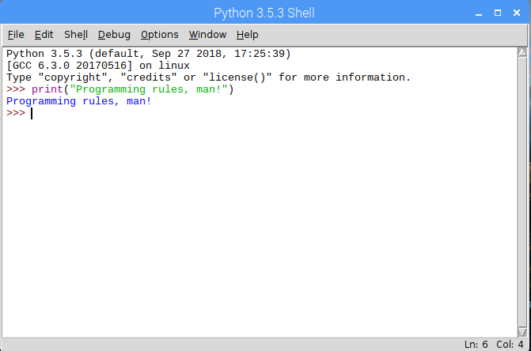
On the Raspberry Pi, IDLE can be launched as follows:
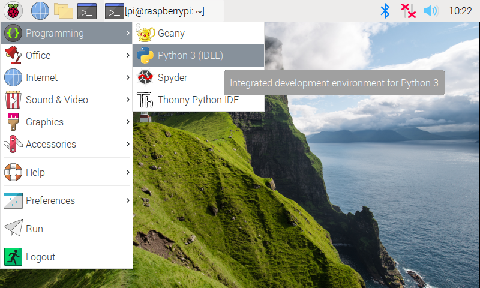
Python programs can also be created and executed at the command line (or terminal). We do so by launching a terminal and typing python, which brings up the Python shell:
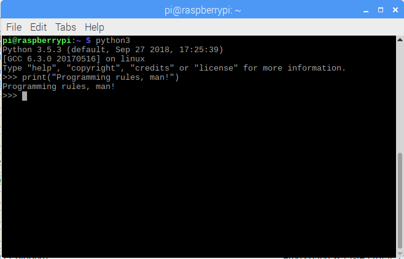
On computers that have two alternate versions of python installed on them, you might have to type python3 as the command to open up a python shell like the one in the image.
Earlier in this lesson, you learned that programs written in a programming language are either compiled (to machine language so that a computer can execute them directly) or interpreted, statement-by-statement (in a sense, you could say that programs written in interpreted languages are compiled, line-by-line, in real time). Python is an interpreted language that implements the imperative paradigm. That is, programs are designed as a sequence of instructions (called statements) that can be followed to complete a task.
Let’s take a look at a simple program in Scratch and see how it compares to the same thing in Python:
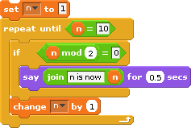
What does this program do? Simply put, it displays the numbers 2, 4, 6, and 8. Take a look at the script above. The variable n is initially set to 1. A repeat-until loop is executed so long as n is less than 10 (i.e., 1 through 9). Each time the body of the loop is executed, the string “n is now (plus the value of n)” is displayed if n is evenly divisible by 2. For example, if n is 4, then the string n is now 4 is displayed. Recall that the mod operator returns the remainder of a division. Therefore, when n mod 2 = 0 is true, it means that the remainder of n divided by 2 is zero – so n must be even! At the end of the body of the loop, the variable n is incremented (ensuring that n will eventually reach the value 10, and we will break out of the repeat-until loop).
Here’s how this can be similarly done in Python:
n = 1
while n < 10:
if n % 2 == 0:
print("n is now " + str(n))
n = n + 1n is now 2
n is now 4
n is now 6
n is now 8At this point, it is fine if you don’t understand everything that’s going on syntactically. The idea is simply to illustrate how Scratch and Python differ (and are similar!). But let’s try to explain.
The block, set n to 1, in Scratch is implemented in Python as, n = 1. Pretty similar!
Python has no repeat-until repetition construct. Instead, we can use a while construct with a modified condition. Repeating a task until a variable (in this case, n) is 10 is the same thing as repeating it while the variable is less than 10.
If-statements are similar; however, the mod and equality operators differ. In Python, we check for equality using the double-equal (==) operator. The mod operator is a percent sign (%). So the block, if n mod 2 = 0, in Scratch can be implemented in Python as, if n % 2 == 0.
Generating the output, “n is now 4,” for example, can be implemented in Scratch using the familiar print statement: print ("n is now 4"). Of course, we don’t always want to display the literal string “n is 4”. So we concatenate (or join) the value of n to the string “n is now” just as we did in Scratch. However, since n is not a string of characters (i.e., it is a number – an integer to be precise), then it must first be converted to a string before being concatenated to another string. This is what str(n) does.
Finally, the value of n is incremented by 1 with the statement n = n + 1.
In Scratch, it is easy to see the blocks that belong in the body of a repetition construct. The puzzle pieces intrinsically capture this (i.e., they are quite literally visible inside the repeat-until block in the script above). In Python, we denote statement hierarchy (i.e., if statements belong in the body of a construct such as a while loop) by using indentation. Note how it is quite clear which statements belong in the body of the while loop above: the if-statement and the statement that increments the variable n by 1. Note that the print statement is inside the true part of the if-statement (this is evident by how it is directly beneath the if-statement and indented further to the right). Again, at this point it is fine to have a minimal grasp of Python’s syntax.
Open your IDE of choice (e.g. IDLE) and follow along with the professor as they try out different code snippets in the python shell. This activity should give you an idea of
the kinds of operators and expressions that are possible in the python shell.
how to execute print statements consisting of different kinds of data
how to prompt the user for some input in the middle of code execution
storing values in variables
using variables and the values stored within as part of other expressions.
You should be able to understand every single statement in the snippet below and even create a similar sequence on your own with a clear grasp of what each statement is doing.
a = 10
b = 15
print(f"{a} ^ {b} = {a**b}")
print(a + 6)
c = input("What is your name?")
print(f"Hello {c}")
d = input(f"so {c}, How old are you?")
e = int(d)
print(f"You are {e} years old and you will be 100 in {100-e} years")So far, we have been entering statements in the Python shell. These statements have been interpreted, one at a time. If we were to close the Python shell, everything that we entered would be lost. In order to save Python programs, we must type them in a separate editor outside of the Python shell, save them in a file. Once this has been done, we can then execute them in the Python shell.
To create a new Python program, click on File | New File (or press Ctrl+N) in the Python shell. This brings up a new window (an editor that is a part of IDLE) in which we can type our program. Type the following program into this new window:
a = int(input("Enter a number: "))
b = int(input("Enter another number: "))
print(f"{a} raised to the power {b} is {a**b}")If you are using IDLE, this is what your window should look like.
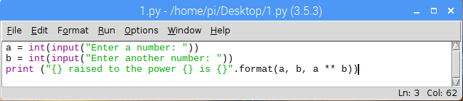
Note that when editing a python file, there will NOT be any >>> symbols on the left of your lines of code. If you see those symbols, that means you are still within the shell and not in an actual python file.
Before we can run this program, it must be saved. Do so by clicking on File | Save (or press Ctrl+S). Give it an appropriate name, and save it to an appropriate location. Now it can be executed by clicking on Run | Run Module (or by pressing F5). This executes the program in the Python shell:
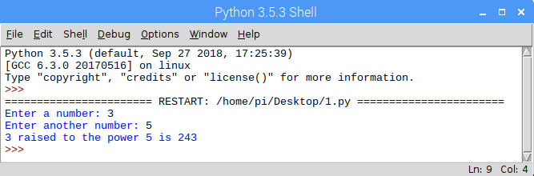
You can run your code any number of times by selecting Run | Run Module (or pressing F5). If your code requires some input from the user, each execution affords you an opportunity to try out different input options e.g. inputing different numbers to see what one raised to another is.
To load a saved Python program, simply double-click on the saved file. This should bring up the IDLE editor with your file loaded in it. Sometimes, double-clicking on the file just opens it up in a notepad- like editor by default. To force it to open in IDLE, right-click the file instead, and select Open with IDLE.
The program can then be executed as before, by clicking on Run | Run Module (or by pressing F5). This will automatically open a Python shell and execute the program.
Write a python program that prompts the user for two numbers and displays the quotient and remainder when the first number is divided by the second. As an example, if the user typed in 17 and 3 for the first and second number respectively, it would output a result similar to the one shown below.
The quotient of 17 divided by 3 is 5 with a remainder of 2The kinds of values that can be expressed in a programming language are known as its data types
Recall that Scratch supports only two data types: text and numbers. Since Python is a general purpose programming language, it supports many more data types. Actually, it can support virtually any type that you can think of! That is, Python allows you to define your own type for use in whatever way you wish. Since this is user-defined, let’s focus on what are called primitive types for now.
The primitive types of a programming language are those data types that are built-in (or standard) to the language and typically considered as basic building blocks (i.e., more complex types can be created from these primitive types).
Python’s standard types can be grouped into several classes: numeric types, sequences, sets, and mappings. Although there are actually others, we will focus on these in the Living with Cyber curriculum.
Numeric types include whole numbers, floating point numbers, and complex numbers. Python has two whole number types: int and long. The int data type is a 64-bit integer. This means that 64 bits (i.e. a bit can be either 0 or 1) is used to represent a single whole number. For example the following series of bits represent a single integer (in fact it represents the number 846,251,337): 0000 0000 0000 0000 0000 0000 0000 0000 0011 0010 0111 0000 1100 0101 0100 1001. We will explore this in more detail at a later time. The long data type is an integer of unlimited length. This means Python will give us enough bits to store any number we want! Note that in Python 3.x, an int is an integer of unlimited length (there is no long data type). These integer types can represent negative or positive whole numbers. The float type is a 64-bit floating point (decimal) number. This means it can hold numbers like 3.14 and -90.3324235. Lastly, the complex type represents complex numbers (i.e., numbers with real and imaginary parts). Most of our programs will require only int and float.
So what does this all mean? We create variables that contain data of some data type. Knowing the data type of a variable is like knowing the superpowers of a person you can control. In this analogy, the superpowers of a data type are the methods and properties that can be leveraged for use in whatever program you are writing at the time. For example, one of the superpowers of the numeric data types is raising them to a power. To do that, we can use the function of the form pow(x,y). In this example, x and y are variables that are of type int or float. The pow function returns the value of the computation involving raising the value in x to the power of the value in y (i.e., xy ). This function would not typically be able to work for variables that aren’t numeric data types. You may recall that the same functionality can be implemented in Python as: x ** y. This effectively performs the same thing.
A constant is defined as a value of a particular type that does not change over time.
In Python (just as in Scratch), both numbers and text may be expressed as constants. Numeric constants are composed of the digits 0 through 9 and, optionally, a negative sign (for negative numbers), and a decimal point (for floating point numbers). For example, the number -3.14159 is a numeric constant in Python.
A text constant consists of a sequence of characters (also known as a string of characters – or just a string). The following are examples of valid string constants:
Note that, unlike Scratch, Python requires the quotes surrounding text constants.
A variable is a named object that can store a value of a particular data type.
Recall that Scratch supports two types of variables: text variables and numeric variables. Moreover, before a variable can be used, its name must be declared. In many programming languages, both its name and type must be declared; however, both Scratch and Python only require a variable’s name to be declared before it is used. Here is an example of declaring and initializing a variable in Python compared to the process in Scratch.
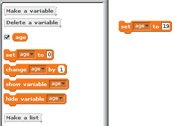
age = 19Here are some examples that deal with variables and how they compare in Scratch and Python:
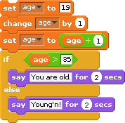
age = 19
age = age + 1
age = age + 1
if (age > 35):
print("You are old.")
else:
print("Young'n!")Young'n!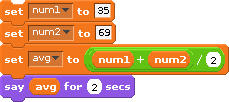
num1 = 35
num2 = 69
avg = (num1 + num2) / 2.0
print(avg)52.0In short, to declare variables in Python, we simply write a statement that assigns a value to a variable name. Note that, just as in Scratch, we can assign a value of a different type to a variable. For example:
var = 5
print(var)
var = 3.14159
print(var)
var = "Pi"
print(var)5
3.14159
PiIt is important to realize that, while human programmers generally try to give variables names that reflect the use to which they will be put, the variable name itself doesn’t mean anything to the computer. For example, the numeric variable age can be used to hold any number, not just an age. It is perfectly legal for age to hold the number of students in a class or the number of eggs in your refrigerator. The computer couldn’t care less. Human programmers, on the other hand, generally care a great deal. They expect a variable’s name to accurately reflect its purpose; so while it is possible to do so, it would be considered poor programming practice to use the variable age to store anything other than an age.
In order for a computer program to perform any useful work, it must be able to communicate with the outside world. The process of communicating with the outside world is known as input/output (or I/O). Most imperative languages include mechanisms for performing other kinds of I/O such as detecting where the mouse is pointing and accessing the contents of a disk drive.
The flexibility and power that input statements give programming languages cannot be overstated. Without them the only way to get a program to change its output would be to modify the program code itself, which is something that a typical user cannot be expected to do.
General-purpose programming languages allow human programmers to construct programs that do amazing things. When attempting to understand what a program does, however, it is vitally important to always keep in mind that the computer does not comprehend the meaning of the character strings it manipulates or the significance of the calculations it performs. Take, for example, the following simple Scratch program:
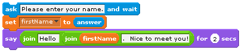
This program simply displays strings of characters, stores user input, and echoes that input back to the screen along with some additional character strings. The computer has no clue what the text string “Please enter your name:” means. For all it cares, the string could have been “My hovercraft is full of eels.” or “qwerty uiop asdf ghjkl;” (or any other text string for that matter). Its only concern is to copy the characters of the text string onto the display screen.
Only in the minds of human beings do the sequence of characters “Please enter your name:” take on meaning. If this seems odd, try to remember that comprehension does not even occur in the minds of all humans, only those who are capable of reading and understanding written English. A four year old, for example, would not know how to respond to this prompt because he or she would be unable to read it. This is so despite the fact that if you were to ask the child his or her name, he or she could immediately respond and perhaps even type it out on the keyboard for you.
Now consider this Scratch program:

Here, the input is numeric instead of text. The program prompts the user for two numbers, which it then computes the sum for and displays to the user. Note that two variables were declared: num1 and num2. The first number is captured and stored in the variable num1. The second number is captured and stored in the variable num2. What do you think would happen if the user did not provide numeric input and, for example, inputted “Bob” for the first number? In the real world, programmers must create robust programs that examine user input in order to verify that it is of the proper type before processing that input. If the input is found to be in error, the program must take appropriate corrective action, such as rejecting the invalid input and requesting the user try again.
In Python, output is implemented as a print statement:
print("This is some output!")We use the input statement to ask a question and obtain user input. In the same statement, we can assign the result of this to a variable:
age = int(input("How old are you? "))Of course, we need to take care to properly specify whether the input is numeric or text (in Python 3.x its a text by default. Use casting to convert into numeric).
You’ve seen how to assign values to variables above using a simple assignment statement. For example:
name = "Shonda Lear"
age = 19
grade = 91.76
letter_grade = "A"These are all examples of assignment statements. In this configuration, the equal sign (=) functions as the assignment operator. Later, you will see how it can also be used to compare values or expressions.
An expression in a programming language is some combination of values (e.g., constants and variables) that are evaluated to produce some new value.
For example, a simple expression in Python is 1 + 2. The result of this expression is, of course, 3! Expressions usually take on the form of operand operator operand. In the previous example, the operator was + and the operands were 1 and 2. The operator + has a very well defined behavior on operands of numeric types: it simply adds them. On string types, it concatenates.
What do you think would happen if the operands are of two different types (e.g., numeric and string)? Try out the statements below and see if you can understand the output that you get.
print(1 + "one")
print("one" + 1)
print("1" + "1")
print(1 + "1")
print(1 + 1)
print("one" + str(1))
print(1 + int("1"))The activity above should have demonstrated that Python doesn’t know what it means to “add” a numeric type to a string type. Therefore, it results in an error: unsupported operand type(s). To “add” a string type to a numeric type, we must convert the numeric type to a string type via str. Then, Python understands that “adding” actually means concatenating two strings. It is interesting to note how Python handles “multiplying” a string type and a numeric type like this:
print("hello" * 5)hellohellohellohellohelloIt turns out that Python understands how to “multiply” both types by interpreting the * operator as concatenating a string type a number of times specified by a numeric type.
print("Baby Shark")
print("doo " * 6)Baby Shark
doo doo doo doo doo doo Python has many different operators that perform a variety of operations on operands. These will be discussed later in this lesson.
A subprogram is a block or segment of organized, reusable, and related statements that perform some action.
It is essentially a program within a program. Recall an earlier lesson on representing algorithms as to-do lists. One algorithm represented the steps necessary to get to class. One of those steps was eat breakfast. We noted how we could zoom in to that step and identify the sub-steps necessary to complete the eat breakfast step. Control flow shifted from the main to-do list to the eat breakfast to-do list when the eat breakfast step was encountered, and then returned to the main to-do list at the point where it left earlier. We can consider the eat breakfast to-do list as a subprogram.
Very few real programs are written as one long piece of code. Instead, traditional imperative programs generally consist of large numbers of relatively simple subprograms that work together to accomplish some complex task. While it is theoretically possible to write large programs without the use of subprograms, as a practical matter any significant program must be decomposed into manageable pieces if humans are to write and maintain it.
Subprograms make the construction of software libraries possible.
A software library (or just library) is a collection of subprograms, or routines as they are sometimes called, for solving common problems that have been written, tested, and debugged.
Most programming languages come with extensive libraries for performing mathematical and text string operations and for building graphical user interfaces. These languages allow programmers to include library routines in their code. Using subprograms from the library speeds up the software development process and results in a more reliable finished product.
When a subprogram is invoked, or called, from within a program, the calling program pauses temporarily so that the called subprogram can carry out its actions. Eventually, the called subprogram will complete its task and control will once again return to the caller. When this occurs, the calling program wakes up and resumes its execution from the point it was at when the call took place.
Subprograms can call other subprograms (including copies of themselves as we will see later). These subprograms can, in turn, call other subprograms. This chain of subprogram invocations can extend to an arbitrary depth as long as the bottom of the chain is eventually reached. It is necessary that infinite calling sequences be avoided, since each subprogram in the chain of subprogram invocations must eventually complete its task and return control to the program that called it.
Subprograms are broken down into two types: methods and functions.
A method is a subprogram that performs an action and returns flow of control to the point at which it was called. A function is similar; however, it returns some sort of value before flow of control is transferred back to the point at which it was called.
For example, a method may simply display some useful information about a program to the user (e.g., a program’s help menu), while a function may compute some numeric value and return it to the user. Subprograms in Python are generally just referred to as functions, regardless of whether or not they return a value. For the remainder of this lesson, we will refer to subprograms as functions.
In Python, functions must formally be declared prior to their use. That is, the body or content of a function must be specified in a program before it can be called. The syntax for declaring a function is as follows:
def function_name(optional_parameters):
function_bodyThe keyword def is a reserved word in Python and is used to declare functions. A function name can be any valid identifier. As you will see later, an identifier is a name used to identify a variable, function, or other object (note that objects will be discussed later). The function name must be followed by a set of parentheses containing optional parameters.
Parameters allow for values (constants, variables, expressions, and so on) to be passed in to a function. They form the input needed for the function to execute properly.
For example, a function may accept two values, calculate their average, and return the result to the caller. The function definition (or header) is terminated with a colon (:). The body of a function (i.e., its enclosed statements) is indented.
Here is an example of a simple function that displays a line of text:
def sayHelloWorld():
print("Hello World!")This function is called sayHelloWorld and takes no parameters. It simply displays the text, “Hello world!”
Once its been defined, we can then progress to using this function as many times as we’d like. To call this function, we simply need to specify its name and the values of its parameters (if any) as follows:
sayHelloWorld()Hello World!Or if we want to call it multiple times:
sayHelloWorld()
sayHelloWorld()
sayHelloWorld()Hello World!
Hello World!
Hello World!Formally, functions have a header and a body. The header is the statement that defines the function (i.e., with the def keyword). The header of a function is often called its signature, and provides its name and any parameters. Function parameters help a function complete its task by providing input values. In fact, each call to a function possibly means a new set of parameters. The body of a function describes what the function does. This is the code within the function. Some functions compute and return a result, called the return value, that is returned via the return keyword.
Here’s a function that accepts two parameters and calculates (and returns) the average of the two:
def average(a, b):
return (a + b) / 2And here are some examples of how it could be called:
a = average(5, 11)
b = average(4, 6)
c = average(22, 21)
print(f"a = {a}, b = {b}, c = {c}")a = 8.0, b = 5.0, c = 21.5Note the return keyword. Its purpose is to return whatever expression comes after it. The statement return (a + b) / 2 returns the result of the expression (a + b) / 2 to the caller (one of which happened at the statement average(5, 11)).
Here’s a pow function that returns the exponentiation of one parameter by another:
def pow(x, y):
return x ** yRecall that x ** y in Python implies exponentiation and means x raised to the power y. Formally, we call ** the exponentiation operator. Operators will be discussed in detail in the next section.
Here’s sample output of this function with various parameters:
a = pow(2, 8)
b = pow(10, 4)
c = pow(3, 5)
print(f"a = {a}, b = {b}, c = {c}")a = 256, b = 10000, c = 243See how many of the following subprograms you can design and use.
double(x) # a function to return double of the argument it receives
power(x, y) # a function to return the result of x raised to the
# power of y
average(x, y, z) # return the average of its arguments
concat(a, b) # a function to return a string concatenation of its
# arguments
isin(a, b) # a function to tell whether the string a is a part of b
max(x, y) # return the larger of two values
iseven(x) # return a whether the argument is even or not
squarenum(x) # return square of its argument
cubenum(x) # return cube of its argument
divide(x, y) # return the quotient of x and y
factorial(x) # return the result of x!
isprime(x) # return whether x is a prime number or not
countvowels(a) # return number of vowels in a string
fibonacci(x) # return the xth fibonacci number
celstofahr(x) # change a temperature from celsius to fahrenheit
lbstokgs(x) # change pounds to kilogramsRecall that designing and using a function are two different parts of working with subprograms. Make sure that you are comfortable with tackling either part of the process.
Below are a few more programs that you can try to design and use. These programs will not require any return statements.
greet(a) # a function to print out a greeting for the name a
printmulttable(x) # print out all values of [1-10] * x
printstarsquare(x) # print out a square of size x of * characters
displaymenu() # print out the items in a fictional menu
printcurrentdate() # print out the current date.Figure 6 should help clarify some of the terminology that we have discussed so far that might be a little confusing.
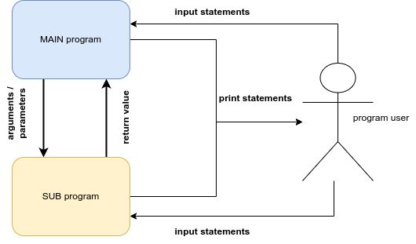
Print statements are used to provide information to the user of the program. They can be executed by either the main program or any subprogram and their purpose is to produce some kind of information on the computer screen for the user of the program.
print("this only has value to the person reading this screen")Input statements are used to gather information from the user of the program. They can also be executed by any part of the program i.e. main program or subprogram and their sole purpose is to prompt the user for some kind of information that will be used by the program later on.
x = input("I need some information from the user of this program")Arguments / Parameters are pieces of information that a subprogram requires to even start its execution. They can either be provided by the main program or another subprogram. You will typically see these arguments whenever the subprogram is being called/used. However, the subprogram should anticipate the reception of these arguments and will typically have a variable place holder for them.
# in this example, x is the argument. The DESIGNER of the function knows
# that in order for the function to even begin, it will need some piece
# of information and they will temporarily store that information in the
# variable x
def double(x):
ans = 2 * x
return ans
# Once the function is defined, the DESIGNER of the main program is now in
# charge of giving a value that will be mapped to x. In the lines below,
# 5, 9, and b are the arguments that will be mapped to x over three
# different executions of the function.
a = double(5)
b = double(9)
c = double(b)Return values are pieces of information that a subprogram wants to give back to the main program (or another subprogram). These values are typically the result of some kind of calculation or process. You will find return statements at the end of a subprogram. The main program (or subprogram) that is using the subprogram in question should anticipate the reception of a return value by either storing it in a variable or using the value as part of an expression.
# in the code snippet above, note that ans is the value that is
# returned.
# the value actually in ans will depend on what argument was passed into
# x when the "double" function is calledLike Scratch, Python has a variety of operators, broken down into several classes: arithmetic operators, relational (comparison) operators, assignment operators, logical operators, bitwise operators, membership operators, and identity operators. Operators allow operations to be performed on operands. Let’s first take a look at the arithmetic operators since they relate directly to assignment.
Arithmetic operators allow us to perform arithmetic operations on two operands.
In the following table, assume that a = 23, b = 17, c = 4.0, and d = 8.0:
| Symbol | Description | Example 1 | Example 2 |
|---|---|---|---|
+ |
addition | a + b = 40 | c + d = 12.0 |
- |
subtraction | a - b = 6 | c - d = -4.0 |
* |
multiplication | a * b = 391 | c * d = 32.0 |
/ |
division | a / b = 1.3529411764705883 | c / d = 0.5 |
% |
modulus | a % b = 6 | c % d = 4.0 |
** |
exponentiation | a ** b = 141050039560662968926103 | c ** d = 65536.0 |
// |
floor division | a // b = 1 | c // d = 0.0 |
c = 4.0
d = 8.0
print(c + d)
print(c - d)
print(c * d)
print(c / d)
print(c % d)
print(c ** d)
print(c // d)12.0
-4.0
32.0
0.5
4.0
65536.0
0.0Relational operators allow us to compare the values of two operands.
The result is the relation among the operands. In the following table, assume that a = 23 and b = 17:
| Symbol | Description | Example |
|---|---|---|
== |
equality | a == b is False |
!= |
inequality | a != b is True |
<> |
inequality | a <> b is True |
> |
greater than | a > b is True |
>= |
greater than or equal to | a >= b is True |
< |
less than | a < b is False |
<= |
less than or equal to | a <= b is False |
Note that the capitalization of True and False is intentional. In Python, the boolean value true is expressed as True and false as False. Also note that the use of <> is mostly discouraged as this is an old style way of checking for inequality. It is therefore recommended to use != instead.
a = 23
b = 17
print(a == b)
print(a != b)
print(a > b)
print(a >= b)
print(a < b)
print(a <= b)False
True
True
True
False
FalseIn Python, relational operators are typically used in if-statements, where branching is often desired. This will be illustrated in more detail later.
Assignment operators allow us to assign values to variables.
You have already seen the most basic example of this using the equal assignment operator (as in the statement: age = 19). In the following table, assume that a = 23.0 and b = 17:
| Symbol | Expression | Description | Result |
|---|---|---|---|
= |
a = b |
assigns the value in b to a |
a = 17 |
+= |
a += b |
increments the value in a by b (same as a = a + b) |
a = 40.0 |
-= |
a -= b |
decrements the value in a by b (same as a = a - b) |
a = 6.0 |
*= |
a *= b |
increases the value in a by a factor of b (same as a = a * b) |
a = 391.0 |
/= |
a /= b |
decreases the value in a by a factor of b (same as a = a / b) |
a = 1.3529411764705883 |
%= |
a %= b |
changes the value in a to the remainder of dividing a by b (same as a = a % b) |
a = 6.0 |
**= |
a **= b |
changes the value in a to the exponentiation of a to b (same as a = a ** b) |
a = 1.4105003956066297e+23 |
//= |
a //= b |
changes the value in a the floor of dividing a by b (same as a = a // b) |
a = 1.0 |
An identifier is a name used to identify a variable, function, or other object (note that objects will be discussed later).
Variable names (such as age and average, for example) or function names (such as midPoint and distance, for example) are all valid identifiers.
In Python, identifiers must begin with a letter (either lowercase a to z or uppercase A to Z) or an underscore (_) followed by zero or more letters, underscores, and digits (0 through 9). Here are examples of valid identifiers:
average
Average
average_grade
averageScore
_mustard
_7a69_
a1b2c3X7Y9Z0Note that Python is a case-sensitive language. For example, the identifier average is not the same as the identifier Average. Take a look at this example:
average = 100
Average = 50
print(f"average = {average}")
print(f"Average = {Average}")average = 100
Average = 50Reserved words (sometimes called keywords) in a programming language are words that are meaningful to the language and cannot be used as identifiers.
Most programming languages have quite a few reserved words. Python 3.x, for example, has the following reserved words:
False, None, True, __peg_parser__, and, as, assert, async, await, break, class, continue,
def, del, elif, else, except, finally, for, from, global, if, import, in,
is, lambda, nonlocal, not, or, pass, raise, return, try, while, with, yield, You are already familiar with some of these: def, print, and return. Many of the Python reserved words will be discussed later.
What makes computers more than simple calculating devices is their ability to respond in different ways to different situations. In order to create programs capable of solving more complex tasks we need to examine how the basic instructions we have studied can be organized into higher-level constructs. Recall that the vast majority of imperative programming languages support three types of control constructs which are used to group individual statements together and specify the conditions under which they will be executed. Again, these control constructs are: sequence, selection, and repetition.
Recall from a previous RPi activity that sequence requires that the individual statements of a program be executed one after another, in the order that they appear in the program. Sequence is defined implicitly by the physical order of the statements. It does not require an explicit program structure. This is related to our previous discussion on control flow.
Selection constructs contain one or more blocks of statements and specify the conditions under which the blocks should be executed.
Basically, selection allows a human programmer to include within a program one or more blocks of optional code along with some tests that the program can use to determine which one of the blocks to perform. Selection allows imperative programs to choose which particular set of actions to perform, based on the conditions that exist at the time the construct is encountered during program execution.
Repetition constructs contain exactly one block of statements together with a mechanism for repeating the statements within the block some number of times.
There are two major types of repetition: iteration and recursion.
Iteration, which is usually implemented directly in a programming language as an explicit program structure, often involves repeating a block of statements either:
while some condition is true, or
some fixed number of times.
Recursion involves a subprogram (e.g., a function) that makes reference to itself. As with sequence, recursion does not normally have an explicit program construct associated with it.
Sequence is the most basic control construct. It is the glue that holds the individual statements of a program together. Yet, when students who are new to programming try to understand how a particular program works, they often just glance over the various statements making up the program to get a feel for what it does rather than methodically tracing through the sequence of actions it performs. One reason such an approach is tempting is because students tend to believe they can figure out what a program is supposed to do based on contextual clues such as the meaning of variable names and character strings.
While it is often possible to gain a superficial knowledge of a program simply by reading it, this approach will not give you the kind of detailed understanding that is frequently required to accurately predict a program’s output. Being able to carefully trace through a program to determine exactly what it does is an important skill. Failure to carefully follow the sequence of instructions often leads to confusion when trying to understand the behavior of a program.
The following Scratch program illustrates the importance of sequence. It contains a little do nothing program that displays the value 16. What makes this program interesting is not so much what its output is, as the way in which that output is computed. Without carefully tracing through the program, one statement at a time, it would be difficult to correctly predict the final output generated by the program.
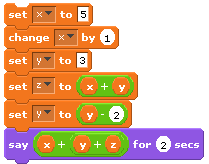
Note that the variables x, y, and z were declared in the variables blocks group. The following illustrates the state of the program’s memory after executing each line of code. After performing the first declaration, the program knows only about the variable x. After the second declaration, it knows of x and y, and after the third, it knows of x, y, and z. Since these variables have not yet been assigned values, their values are considered to be undefined at this point.
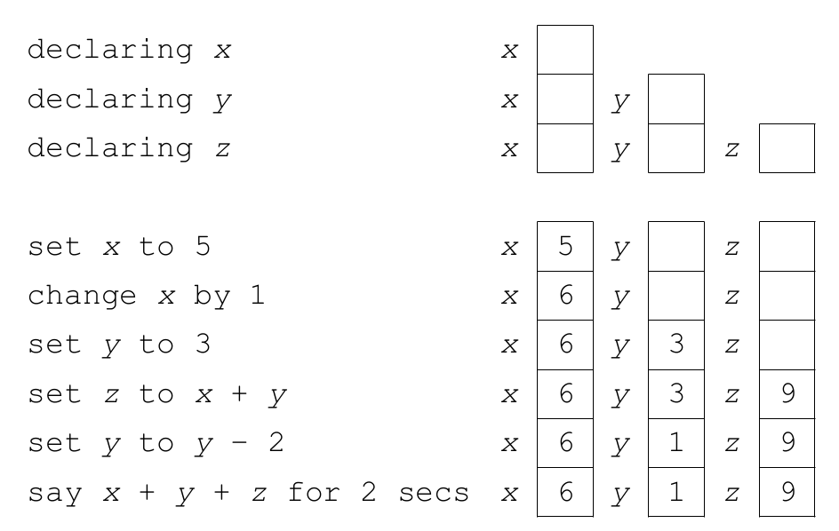
16In Python, sequence is implemented in a manner very similar to Scratch: we simply place statements in the order that we wish them to be executed. Here’s the program above in Python:
x = 5
x += 1
y = 3
z = x + y
y -= 2
print(x + y + z)16Sequence represents the natural order of statement execution. It represents a top-down, sequential order where lines of code are evaluated one after the other.
Selection statements give imperative languages the ability to make choices based on the results of certain condition tests. These condition tests take the form of Boolean expressions, which are expressions that evaluate to either True or False. As discussed earlier, there are various types of Boolean expressions, but most of the time condition tests are based on relational operators. Recall that relational operators compare two expressions of like type to determine whether their values satisfy some criterion. Selection statements use the results of Boolean expressions to choose which sequence of actions to perform next. The general form of all Boolean expressions:
expression relational_operator expressionBoth Scratch and Python support two different selection statements: if-else and if. An if-else statement allows a program to make a two-way choice based on the result of a Boolean expression. If-else statements specify a Boolean expression and two separate blocks of code: one that is to be executed if the expression is true, the other to be executed if the expression is false. Recall that, in Scratch, selection constructs contain one or more blocks of statements and specify the conditions under which the blocks should be executed.
Here’s an example:
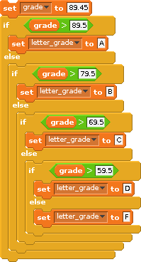
Here is an equivalent snippet of code in Python
grade = 89.45
if (grade > 89.5):
letter_grade = "A"
else:
if (grade > 79.5):
letter_grade = "B"
else:
if (grade > 69.5):
letter_grade = "C"
else:
if (grade > 59.5):
letter_grade = "D"
else:
letter_grade = "F"
print(f"{grade} is a/an {letter_grade}")89.45 is a/an BNote the structure of an if-else statement in Python:
if (condition):
# this is the if body i.e. statements that will be executed if the
# condition is True
else:
# this is the else body i.e. statements that will be executed if the
# condition is False
# Any statements UNindented are NO longer a part of the appropriate
# if-else block.Note the colons after the condition and the else, as well as the indentation of both the true and false parts/blocks. Both are vital in indicating where the True and False sections of the if-else statement begin and end!
Note in the grade/letter_grade example above that there are a few nested if-else statements i.e. if-else statements inside of other if-else statements. Python provides a more elegant way to do the same thing using the elif clause (which stands for else if):
grade = 67.4
if (grade > 89.5):
letter_grade = "A"
elif (grade > 79.5):
letter_grade = "B"
elif (grade > 69.5):
letter_grade = "C"
elif (grade > 59.5):
letter_grade = "D"
else:
letter_grade = "F"
print(f"{grade} is a/an {letter_grade}")67.4 is a/an DNote the indentation looks a little different when you use elif statements compared to nested if-else statements. This is because all blocks of the elif statements are at the same level. This is in contrast to nested if-else blocks where an entire if-else block is contained within either the if or else of another if-else block.
The if statement is similar to the if-else statement except that it does not include an else block. That is, it only specifies what to do if the Boolean expression is true.
The structure of an if statement in Python is:
if (condition):
# this is the if body i.e. statements that will only be executed if
# the condition is True
# Any statements UNindented are NO longer a part of the if block i.e.
# any statements here will be executed whether or not the condition was
# True.Note the colon and indentation. As in the if-else statement, both are vital in indicating where the true section of the if statement begins and ends!
If statements are generally used by programmers to allow their programs to detect and handle conditions that require special, optional or additional processing. This is in contrast to if-else statements, which can be viewed as selecting between two (or more) mutually exclusive choices.
if (age >= 62):
print("You are a senior citizen")It is worth mentioning that the conditions in both if and if-else statements are not required to be placed in parenthesis in Python. However, we believe getting used to doing so will make your transition to other programming languages easier because many of them require that the conditions of their if and if-else statements are placed within parenthesis.
if condition:
# do something
# is the exact same as if (condition):
# do something
# this statement in Python.Repetition is the name given to the class of control constructs that allow computer programs to repeat a task over and over. This is useful, particularly when considering the idea of solving problems by decomposing them into repeatable steps. There are two primary forms of repetition: iteration and recursion.
Recall that Scratch supports iteration in two main forms: the repeat loop and the forever loop. The repeat loop has two forms: repeat-until and repeat-n (where n is some fixed or known number of times). The repeat-until loop is condition-based; that is, it executes the statements of the loop until a condition becomes true. The repeat-n loop is count-based; that is, it executes the statements of the loop n times.
In a repeat-until loop, the Boolean expression is first evaluated. If it evaluates to false, the loop statements are executed; otherwise, the loop halts. Here’s an example in pseudocode:
total = 0
repeat
num = prompt for a positive number (-1 to quit)
if num > 0
total = total + num
until num < 0
display totalThis program asks the user to enter a positive number or -1. If a positive number is entered, it is added to a running total. If -1 is entered, the program displays the total and halts. The repeat-until loop is used here to repeat the process of asking the user for input until the value entered is less than 0. It is interesting to note that although the program instructs users to enter -1 to quit, the condition that controls the loop is actually num < 0 (which will be true for any negative number). Thus, the loop will actually terminate whenever the user enters any number less than zero (e.g., -5).
In Scratch, the repeat-n loop executes the loop statements a fixed (or known) number of times. Recall the flowchart for the repeat-n loop:
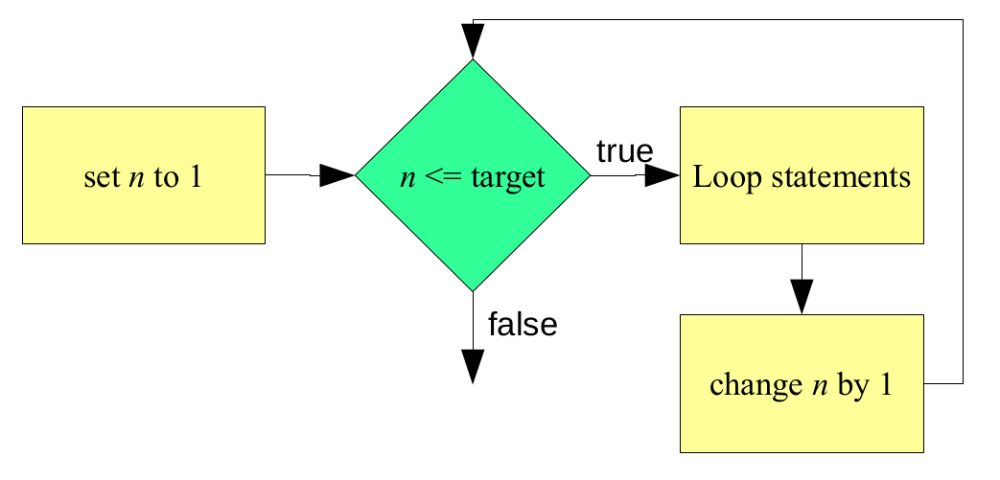
Although the programmer does not have access to a variable that counts the specified number of times (shown as n in the figure above), the process works in this manner. A counter is initially set to 1. A Boolean expression is then evaluated that checks to see if that counter is less than or equal to the target value (e.g., 10). If so, the loop statements execute. Once the loop statements have completed, the counter is incremented, and the expression is reevaluated.
Like Scratch, Python provides several constructs for repetition. The while loop is the most general one, and allows for both event-control (e.g., repeat-until) and count-control (e.g., repeat-n). Comparing this to Scratch, the while loop is similar to the repeat-until and repeat-n blocks. Here is a simple example in Scratch:
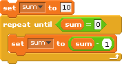
This simple script initializes a variable, sum, to 10. It then repeatedly decrements it by one until it is 0. This can be accomplished in Python using a while loop. The structure of a while loop in Python is:
while (condition):
# statements that will be executed while the condition is True. To
# get out of the while block, the condition needs to become False by
# the end of block during one of its iterations.
# statements that will be executed once the while loop is completed.Similar to if and if-else conditions, the while condition can be placed within or without parenthesis in Python.
Below is a simple python program that will change the value of sum from 10 to 0 by decrementing it by 1 multiple times. See if you can follow the code to see how it does it and produces the shown output.
sum = 10
print(f"Before the loop: sum is {sum}")
while (sum > 0):
print(f"sum is now {sum}")
sum -= 1
print(f"After the loop: sum is {sum}")Before the loop: sum is 10
sum is now 10
sum is now 9
sum is now 8
sum is now 7
sum is now 6
sum is now 5
sum is now 4
sum is now 3
sum is now 2
sum is now 1
After the loop: sum is 0There is a slight difference between the condition in Scratch’s repeat-until loop and the condition in Python’s while loop: the condition in the while loop needs to be true to remain in the loop; the loop is terminated whenever the condition evaluates to false. Conversely, the condition in the repeat-until loop should be false to remain in the loop. The repeat-until loop is terminated whenever the condition evaluates to true.
To implement Scratch’s repeat-n loop in Python with a while loop, we need to create a counter:
counter = 0 # a variable to keep track of how many iterations the
# while loop will be executing.
sum = 0
print(f"Before the loop: counter = {counter}, sum = {sum}")
while (counter < 10):
sum += 2 # execute the body of the loop i.e. whatever
# task you want to execute repeatedly...
counter += 1 # and then increment the counter by 1
print(f"After the loop: counter = {counter}, sum = {sum}")Before the loop: counter = 0, sum = 0
After the loop: counter = 10, sum = 20Before leaving the topic of iteration, we should say a few words about the idea of nested loops. Two loops are nested when one loop appears within the body of another loop. This is quite common, and in fact may be carried out to an arbitrary depth. However, to keep the logic of a program from becoming too hard to follow, programmers try to limit nesting depths to no more than three or four levels deep.
The following Python program displays the multiplication table. This program consists of two nested while loops. The loop variable of the outer loop is i, and the loop variable for the inner loop is j. Both of these loops count from one to nine:
i = 1 # variable to keep track of the outer loop
while (i < 10):
j = 1 # a variable to keep track of the inner loop. Note that
# this variable will be reset to 1 every time the outer loop
# restarts.
while (j < 10):
print(f"{i} x {j} = {i*j}")
j += 1 # increment the variable for the inner loop
i += 1 # increment the variable for the outer loopThe program’s output is of the form i x j = k, where i and j represent the values of the respective variables, and k is their product. Notice that j runs through its entire range, from 1 to 9, before i is incremented by 1. This behavior is easy to understand when you think about the structure of the program.
Let’s look at the outer loop. What does it do? Well, first i is initialized to 1, it is then compared to 10, and since i is less than 10, the first iteration of the loop commences. The first statement of the loop initializes j to 1. The next statement is another while loop. In order for the first iteration of the outer loop to complete, the program must execute this inner loop to completion. Note that the last statement in each while loop is a statement that increments its respective variable. Recall that the loops counter needs to change in order for the condition to eventually be false so that the execution can exit the while loop.
The process repeats until all 81 entries in the multiplication table, from 1 x 1 to 9 x 9, are computed and displayed.
We conclude this section with the following Python program:
bottles = 99
while (bottles > 0):
print(str(bottles) + " bottles of beer on the wall.")
print(str(bottles) + " bottles of beer.")
print("Take one down, pass it around.")
bottles -= 1
print(str(bottles) + " bottles of beer on the wall.")
print()This program displays the lyrics to the song, “99 Bottles of Beer on the Wall.” As you most likely know, the song begins as follows:
99 bottles of beer on the wall.
99 bottles of beer.
Take one down, pass it around.
98 bottles of beer on the wall.
98 bottles of beer on the wall.
98 bottles of beer.
Take one down, pass it around.
97 bottles of beer on the wall.It continues in this manner, with one less bottle in each verse, until it finally runs out of beer. An interesting feature of the program is that it decrements bottles in the middle of the loop rather than at the end. You should trace through the program with a few bottles to convince yourself that it does work properly. One thing you will probably notice as you do so is that when the program gets down to one beer, it reports that as “1 bottles of beer on the wall.” While this lack of grammatical correctness might not seem like such a big deal, especially after 98 beers, we can correct it easily with an if statement.
See if you can write out the “Bottles of Beer” program above such that it is grammatically correct throughout the entire song.
Recursion is a type of repetition that is implemented when a subprogram calls itself.
When a recursive call takes place, control is passed to what appears to be a brand new copy of the subprogram. This copy of the subprogram may, in turn, call another copy of the subprogram. That copy may call another copy, and so on. Eventually, these recursive calls must terminate and return control to the original calling program.
Take the “99 Bottles of Beer on the Wall” program above. It illustrated an iterative method of singing the song. Here’s an example of the same program in Python, implemented using recursion:
# a function that takes in the number of bottles as its argument,
# "sings" a verse of the song, and then calls another copy of itself
# with a smaller number of bottles.
def consumeBeers(bottles):
if (bottles > 0):
print(str(bottles) + " bottles of beer on the wall.")
print(str(bottles) + " bottles of beer.")
print("Take one down, pass it around.")
print(str(bottles - 1)+ " bottles of beer on the wall.")
print()
consumeBeers(bottles - 1)
# A simple statement to call the function the first time with the
# original number of bottles.
consumeBeers(99)At first glance you might think that this program is nearly identical to the program shown earlier. There are, however, two major differences between the two. First, instead of a while loop, this program has an if statement. Also, just before the end of the if statement, the same subprogram (consumeBeers) is called. This is the recursive call!
Note that the value of the variable bottles is decremented by 1 at the recursive call. When control enters the subprogram, the value is checked to see if it is greater than 0. This ensures that, so long as bottles is decremented each time the subprogram executes, it will eventually reach 0. When this occurs, it will cause the Boolean expression in the if statement to evaluate to false, thereby not executing its block (and calling itself again) and stopping the recursion.
One way to envision recursion is to think of it as a spiral. Each time a subprogram calls itself, we descend down a level of the spiral until we eventually reach the bottom. At that point, execution begins to unwind as the subprogram calls complete and we retrace our path back up through the various levels until finally arriving at the top level where execution began.
The recursive program above illustrates what is called tail recursion, because the recursive call is the last action taken by the subprogram. In tail recursion, there is no work to be done during the unwinding process because it was all done on the way down the spiral. In Scratch, this is the only way of implementing recursion. Python permits other forms of recursion, where the recursive call can occur before other statements.
Many students, upon learning how recursion works, worry that programs that employ this form of repetition might be very inefficient in terms of their utilization of machine resources. After all, you have all of those copies of the subprogram hanging around. The good news is that recursion is not nearly as expensive as you probably think. For one thing, only one copy of the actual subprogram code is needed. All that is reproduced during each call is the execution environment, the variables and whatnot that are used by that version of the subprogram. While it is true that recursion generally involves more overhead than iteration, recursive calls are really no more expensive than any other kind of function call. In fact, some optimizing compilers convert tail recursion into iteration so there is often no additional expense in using that form of recursion at all.
Aside from the efficiency issue, you may be wondering why programming languages would support recursion. After all, whenever the need for repetition arises the programmer could always use one of the iteration constructs. The reasons for supporting both recursion and iteration are the same as those, for example, supporting two types of selection statements (if and if-else): clarity and convenience. Some problems are simply easier to solve using recursion than iteration. For these types of problems, a recursive solution is often more compact and easier to read than an iterative one.
It is very important to be able to identify the flow of control in any program, particularly to understand what is going on. In Python, function definitions aren’t executed in the order that they are written in the source code. Functions are only executed when they are called. This is perhaps best illustrated with an example:
def min(a, b):
if (a < b):
return a
else:
return b
def max(a, b):
if (a > b):
return a
else:
return b
num1 = int(input("Enter a number: "))
num2 = int(input("Enter another number: "))
print(f"The smaller number is {min(num1, num2)}")
print(f"The larger number is {max(num1, num2)}")Each Python statement is numbered for reference. Lines 1 through 5 represent the definition of the function min. This function returns the minimum of two values provided as parameters. Lines 7 through 11 represent the definition of the function max. This function returns the maximum of two values provided as parameters. Lines 13 through 16 represent the main part of the program. Although the Python interpreter does see lines 1 through 12, those lines are not actually executed until the functions min and max are actually called. The first line of the program to actually be executed is line 13. In fact, here is the order of the statements executed in this program if num1 = 34 and num2 = 55:
13, 14, 15, 1, 2, 3, 16, 7, 8, 10, 11Let’s explain. Line 13 asks the user to provide some value for the first number (which is stored in the variable num1). Line 14 asks the user to provide some value for the second number (which is stored in the variable num2). Line 15 displays some text; however, part of the text must be obtained by first calling the function min. This transfers control to line 1 (where min is defined). The two actual parameters, num1 and num2, are then passed in and mapped to the formal parameters defined in min, a and b. Then, line 2 is executed and performs a comparison of the two numbers. Since a = 34 and b = 55, then the condition in the if-statement is true. Therefore, line 3 is executed before control is transferred back to the main program with the value of the smaller number returned (and then control continues on to line 15). Note that lines 4 and 5 are never executed in this case!
Line 16 is then executed and displays some text. Again, part of the text must be obtained by first calling the function max. This transfers control to line 7 (where max is defined). The variables a and b take on the values 34 and 55 respectively. Line 8 is then executed, and the result of the comparison is false. Therefore, line 9 is not executed. Control then goes to line 10, and then to line 11 which returns the larger value. The program then ends.
See if you can figure out the order of execution if num1 = 55 and num2 = 34.
What about when num1 = 100 and num2 = 100?
Knowing the order in which statements are executed is crucial to debugging programs and ultimately to creating programs that work.
14 Comments
It is often useful to provide informative text in our programs.
A comment is text that is not interpreted nor converted to some sort of executable format as typical source code may be. It simply exists to provide information to developers, coders, or users working on or inspecting source code.
We often comment parts of programs to describe what something does, why a choice in construct was chosen, and so on. Typically, a header at the top of our programs is also inserted to provide information such as who authored the program, when it was last updated, and what it does.
In Python, there are two kinds of comments: single- and multi-line comments. Although there are several ways of commenting, we will only discuss the more widely used methods.
Single-line comments span a single line (or a part of a line). A single line comment begins with the pound or hash (for the Twitter/X crowd) sign:
#. A single-line comments can take up the entire line (i.e., the line begins with#), or it can follow a valid Python statement (i.e., only the latter part of a line is commented). Here are sample single-line comments:In the snippet above, there are three single-line comments. Two each take up an entire line. The third takes up only part of the line. The text that comes before it is valid Python syntax that is interpreted. Note that, once a comment has been started on a line, the rest of the line must be a comment.
Multi-line comments begin and end with three single (
''') or double quotes (""")in succession. They are typically used in source code headers, to comment out blocks of code for reasons such as debugging, and so on. Here are sample multi-line comments:Note that single and double quotes cannot be mixed in multi-line comments. That is, a multi-line comment cannot start with three single quotes and end with three double quotes. Many Python programmers prefer to implement multi-line comments as a sequence of single-line comments; for example:
This often stems from the fact that, in Python, strings can be enclosed in single quotes (
'), double quotes ("), or three successive single (''') or double (""") quotes. The latter allows strings to span multiple lines. For example:Specifically regarding program headers, many programmers choose to implement them as follows to make them readable and easily identifiable: